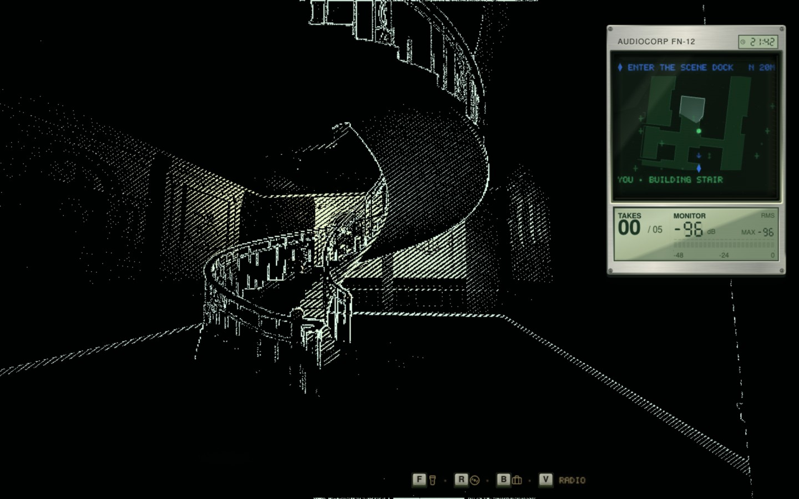
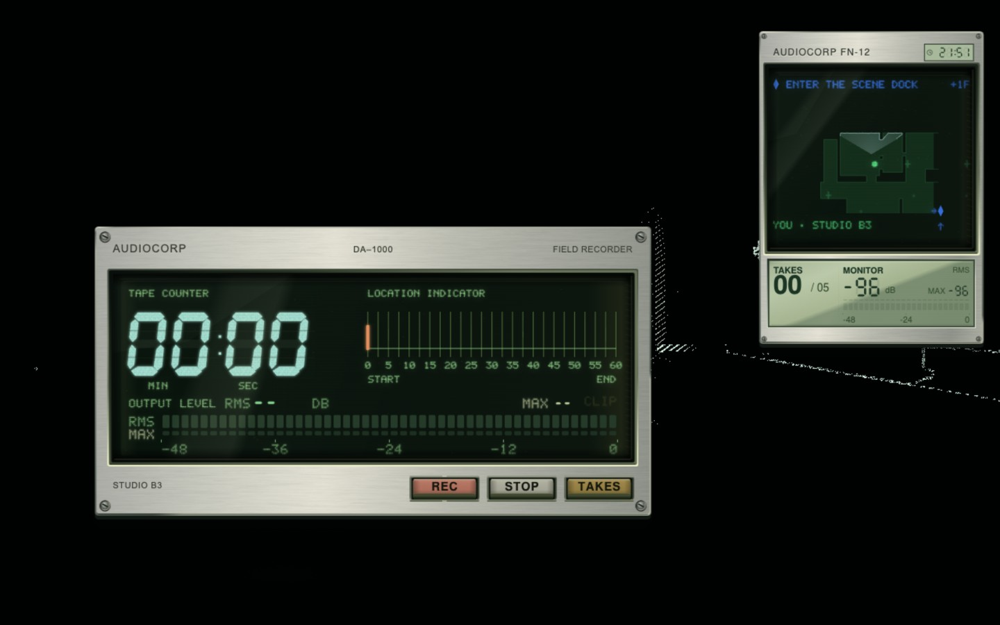
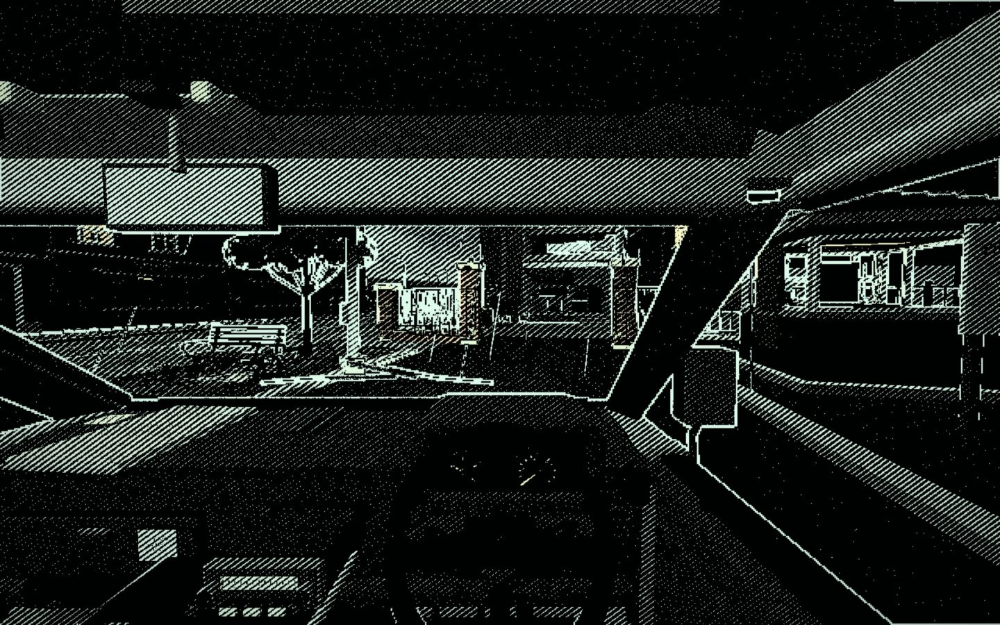
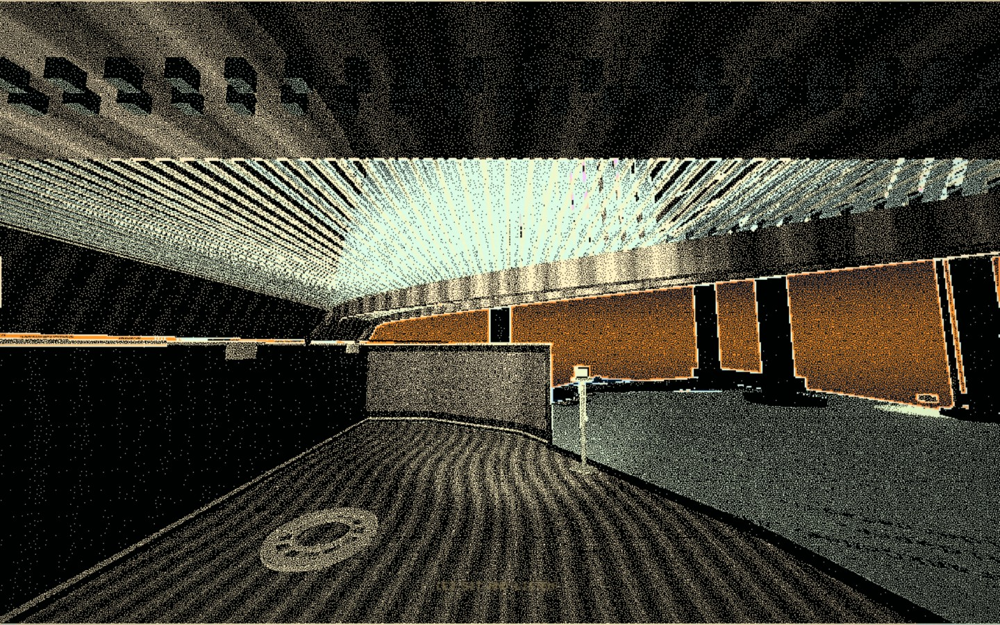
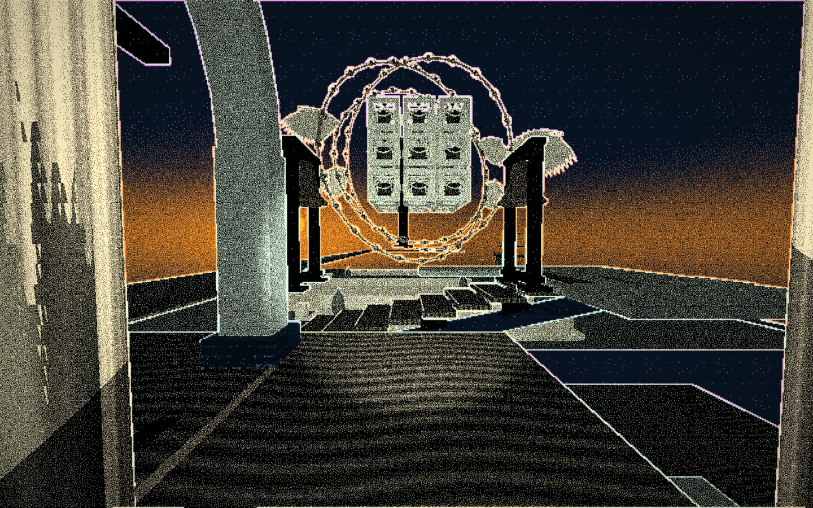
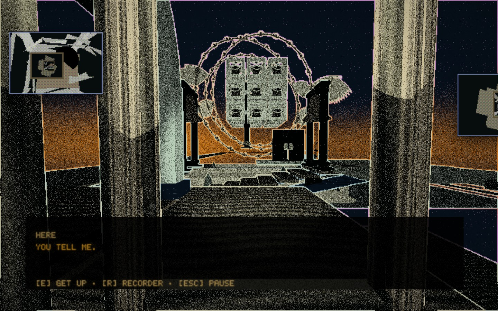

CHUNK SURFER
A downloadable game for Windows, macOS, and Linux
AUDIOCORP / WORK ORDER 4417-C
TAKE THE JOB.
Report to condemned Ellery Conservatory as the field recordist. Capture five clean room tones before demolition at 06:00.


ENTER ELLERY. FIND YOUR WAY.
01 / FIELD CAPTURE
ARRIVE. LISTEN. RECORD.
Step out of the van. Check in. Choose your equipment and bring a light. Open the room in your headphones, check the level, then press REC and hold still. Keep your footsteps, handling, and breath off the take. Press STOP when it is usable. Open TAKES to hear what came back.
Mind the torch battery. Keep the beam and your noise off anything you would rather leave alone.


OPEN THE RECORDER. CHECK THE ROOM.
02 / ENCOUNTERS
READ THE MOVE. ANSWER.
Patch your techniques before the encounter. EXPOSE what hides. MONITOR a broadcast, capture it, then use PLAYBACK. HOLD against a blow or time a parry to turn it back. Earn another action with a good read. Watch the battery and your composure.
03 / PEOPLE AND RECORDS
TALK. READ. CALL.
Go across the road. Speak to the people keeping the pub warm. Help with an errand. Meet the people still occupying the school. Ask about a performance. Read the retained records. Follow the letters and phone calls. Hear what has been left out of the account, including your own.


STEP OUT. CHECK IN.
04 / ONWARD AND RETURN
KEEP GOING. KEEP LISTENING.
Climb through instruments large enough to become buildings. Cross rooms joined at impossible angles. Find the next landing. Take the wheel and drive into the storm.
Sit with a performance. Let the conversation run. Hear the hands, the mistakes, and the space after a note. Decide how long to remain. Get up while you still can.
Choose what to carry out. Reach an ending and check ARCHIVE / 100% for discoveries and filed returns. Finish a run; if it qualifies, play through that same night from another side.


FIND THE NEXT LANDING.


FIND A WAY THROUGH.


LISTEN. GET UP WHILE YOU CAN.
BEFORE YOU PLAY
SET THE INPUT.
MICROPHONE OPTIONAL · LOCAL PROFILE OPTIONAL
Microphone permission is optional. With permission, room loudness is measured locally. You can choose to record spoken slates and voicemail; those recordings stay on your device. There is no speech recognition or automatic audio upload.
A separate optional local profile permits disclosed personalization using names, computer details, and in-game responses. Optional effects can move the game window, open game-owned windows, and create files in the game's local data folder. The complete game remains available without microphone input or profiling. Disable modules, restore the window, or erase profile data in SETTINGS.
Use keyboard and mouse or a controller. Adjust text speed, flashes, screen shake, controller bindings, recording forgiveness, navigation help, combat assistance, and escape timers in Settings.
CONTENT WARNING
Sustained dread, sudden loud sounds, deliberate jumpscares, flashing lights, and high-contrast patterns. Reduce visual effects in Settings. Optional desktop effects may move the game window and open additional windows.
Download
Local preview: these controls open installation instructions.
Install instructions
CHUNK SURFER / INSTALLATION
INSTALL THE BETA.
v0.3.0 PUBLIC BETA · UNSIGNED
Choose the package for your computer. Follow the steps below.
- macOS Apple Silicon · DMG
- windows x64 ·
chunk-surfer-windows-x64.zip· Microsoft Edge WebView2 Runtime required - linux x64 ·
chunk-surfer-linux-x64.AppImageorchunk-surfer-linux-x64.deb - audio Headphones recommended. A microphone is optional.
These beta packages are unsigned, so your operating system may block the first launch. Use the approval steps below for the copy you downloaded from this page. Download sizes appear beside each file.
macOS
- Open the downloaded macOS Apple Silicon
.dmgand drag Chunk Surfer into Applications. - Launch Chunk Surfer from Applications. If macOS blocks it, open System Settings → Privacy & Security and use Open Anyway for Chunk Surfer, then confirm the launch.
- If you enable microphone input, also allow access in the macOS permission prompt. You can continue playing if you decline.
Windows
- Extract
chunk-surfer-windows-x64.zipcompletely into a folder you can write to. - Keep all extracted files together and run
chunk-surfer.exe. Do not launch it from inside the ZIP. - The Microsoft Edge WebView2 Runtime must be installed. If it is missing, install it from Microsoft and launch the game again.
- If SmartScreen shows Windows protected your PC, use More info → Run anyway for this downloaded beta.
Linux
- AppImage: make the file executable and run it:
chmod +x chunk-surfer-linux-x64.AppImage./chunk-surfer-linux-x64.AppImage - Debian / Ubuntu: install with
sudo apt install ./chunk-surfer-linux-x64.deb, then open Chunk Surfer from your applications menu.
The game needs working 3D graphics support. If you see a blank or incorrectly rendered world, include your GPU and graphics-driver details in a bug report. Compatibility and performance on additional hardware are still being tested.
Controls
Keyboard and mouse or a controller can be used for normal play. Controller buttons can be remapped in Settings. These are the default on-foot keyboard controls; driving and other scenes show their own prompts:
| Key | Action |
|---|---|
| WASD / arrow keys | Move |
| Shift | Quiet movement |
| C | Hide |
| F | Light |
| B | Bag |
| M | Map |
| R | Open recorder |
| V | Radio |
| E | Interact |
| P | Playback |
| Esc | Menu / pause |
The recorder has REC, STOP, and TAKES controls. Opening it does not pause the room. Follow the prompts on the machine when starting a recording or saving a usable take.
Microphone and local recordings
Microphone permission is optional. With permission, the game measures room loudness locally so real noise can affect play. You can also choose to record spoken take slates and voicemail. These recordings stay on your device; the game does not recognize speech or automatically upload audio. You can complete the game without a microphone.
Use Settings → Input to select an input and test its level. Operating-system privacy settings control the app’s microphone permission.
Local profile and desktop effects
The separate profile choice permits disclosed local personalization using names, computer details, and in-game responses. Optional desktop effects can move the game window, open additional game-owned windows, and create field-return files in the game’s local data folder. Profile data is processed locally and is not uploaded.
You can play the complete game with the profile off. Settings let you disable individual modules, restore the game window, and erase the profile data.
Content warning and accessibility
Sustained dread, sudden loud sounds, deliberate jumpscares, flashing lights, and high-contrast patterns. Set your preferred effects before starting.
Settings include text speed and instant text, flash/strobe and screen-shake reduction, controller configuration, recording forgiveness, navigation help, combat assistance, and escape-timer adjustments.
Saved data and uninstalling
Removing the app normally leaves local progress, settings, and recordings on this device. To remove them too, first open Settings → Memory → Erase all data & restart in the game and confirm. Wait for the restart, then quit and remove the app or package. Exported copies and operating-system backups are not removed by this reset.
Report a problem
Include the game version, operating system, CPU/GPU, controller model if relevant, and the steps that led to the problem. A diagnostic report from the in-game About/Support panel also helps.
- bugs Report a bug
- feedback Send playtest feedback
CHUNK SURFER / v0.3.0 PUBLIC BETA